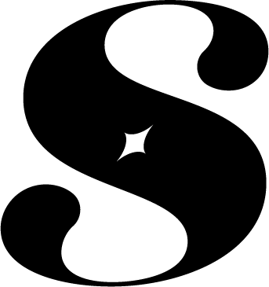

About
Salut ! Moi, c’est Sami ! 😺
Tu veux découvrir un peu plus de ma relation avec mon domaine, le Design Graphique ? 🎨✨
Alors parlons-en !
Ma relation au Design Graphique
🎨 - Je me sens profondément connecté au domaine du design graphique, car il représente l’alliance parfaite entre mon amour pour la créativité et ma capacité à structurer des idées complexes . Depuis aussi loin que je me souvienne, l’art visuel a toujours été une forme d’expression privilégiée pour moi. J’ai développé une fascination pour les formes , les couleurs , et la manière dont elles influencent notre perception et renforcent notre imaginaire collectif.
🖼️ - En tant que designer graphique, je me réalise en donnant vie à des identités visuelles uniques et en aidant des marques et des projets à trouver leur voix et leur présence. Mon expérience et mes compétences me permettent de jongler entre la créativité et la rigueur 📐, une dualité qui est au cœur du design graphique. J’aime cette capacité qu’a le design à synthétiser des messages complexes en visuels percutants, à créer des univers cohérents , et à transformer des idées en réalités tangibles, que ce soit sur un écran ou sur papier .
👁️ - Dans le monde actuel, où l’authenticité et l’impact visuel sont essentiels, je trouve une grande satisfaction à répondre aux besoins des entreprises qui cherchent à se démarquer dans le numérique. Chaque projet est pour moi une nouvelle opportunité d’apporter une vision, de guider un client dans la construction de son image de marque, et d’optimiser les interactions avec son audience.
🗂️ - Enfin, le design graphique est bien plus qu’un simple métier : c’est mon équilibre. C’est l’alignement entre ce que j’aime, ce pour quoi je suis compétent, et ce dont le monde a besoin. Je crois fermement que mon travail peut contribuer à enrichir les échanges visuels, à humaniser les marques, et à rendre notre quotidien plus esthétique et significatif. C’est dans cette perspective que je m’investis pleinement dans chaque projet, convaincu que le design graphique est la voie par laquelle je peux réellement exprimer le meilleur de moi-même et laisser une empreinte positive dans mon environnement.
Taxonomies du domaine
📚 Les taxonomies ci-dessous détaillent les sous-catégories et concepts clés du design graphique, orientés vers mes centres d’intérêt et les besoins du secteur :
-
Identité visuelle et Branding 🏷️ :
- Création de logos, chartes graphique, palettes de couleurs
- Gestion de l’image de marque et de la communication visuelle
- Branding numérique et imprimé pour les entreprises
-
Conception UX/UI 🛠️:
- Design d’interfaces utilisateurs (UI) pour le web et les applications mobiles
- Expérience utilisateur (UX) orientée sur l’accessibilité, la navigation, et l’engagement
- Prototypage et maquettes pour le développement front-end
-
Contenu visuel et éditorial 📄 :
- Conception et mise en page de documents imprimés et digitaux (brochures, magazines, ebooks)
- Création de visuels pour les réseaux sociaux, publicités, et supports marketing
- Storytelling et conception de contenu visuel pour les campagnes éditoriales
-
Production numérique et imprimée 📦:
- Préparation des fichiers pour l’impression numérique et offset
- Connaissance des techniques d’impression, finitions, et choix de matériaux
- Collaboration avec des imprimeurs et gestion des projets d’impression
-
Community Management et gestion de marque 💬 :
- Création de visuels engageants pour les plateformes sociales
- Veille sur les tendances graphiques et gestion des interactions
- Gestion de l’identité visuelle et cohérence de la marque en ligne
-
Leadership et Organisation d’équipe 🧑💻 :
- Gestion de projet et coordination avec les équipes de développement, marketing et design
- Leadership créatif et management d’équipe de designers
- Processus créatifs collaboratifs et optimisation des flux de travail
Choix du SSG
📖 Pour la publication de ma veille technologique et de mon blog en design graphique, voici le choix justifié du SSG :
-
SSG sélectionné : Hugo
-
Justification :
- 🚀 Simplicité et rapidité : Hugo est reconnu pour sa grande rapidité et sa simplicité, parfait pour un blog de veille.
- 📂 Gestion des taxonomies et contenu : Idéal pour structurer les articles selon mes taxonomies définies (Identité visuelle, UX/UI, etc.).
- 🎨 Templates variés pour le design : Hugo offre de nombreux thèmes esthétiques, personnalisables facilement.
- 📘 Documentation et communauté : Une communauté active et une documentation complète, parfaites pour tous les utilisateurs.
En somme, Hugo se distingue fortement pour mon domaine, car il est intuitif, rapide, et flexible 💡 pour répondre aux exigences visuelles de mon métier.